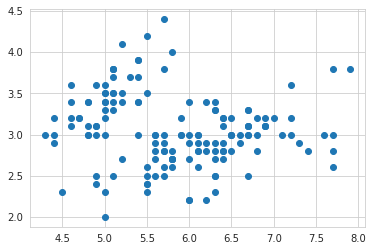
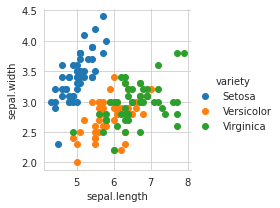
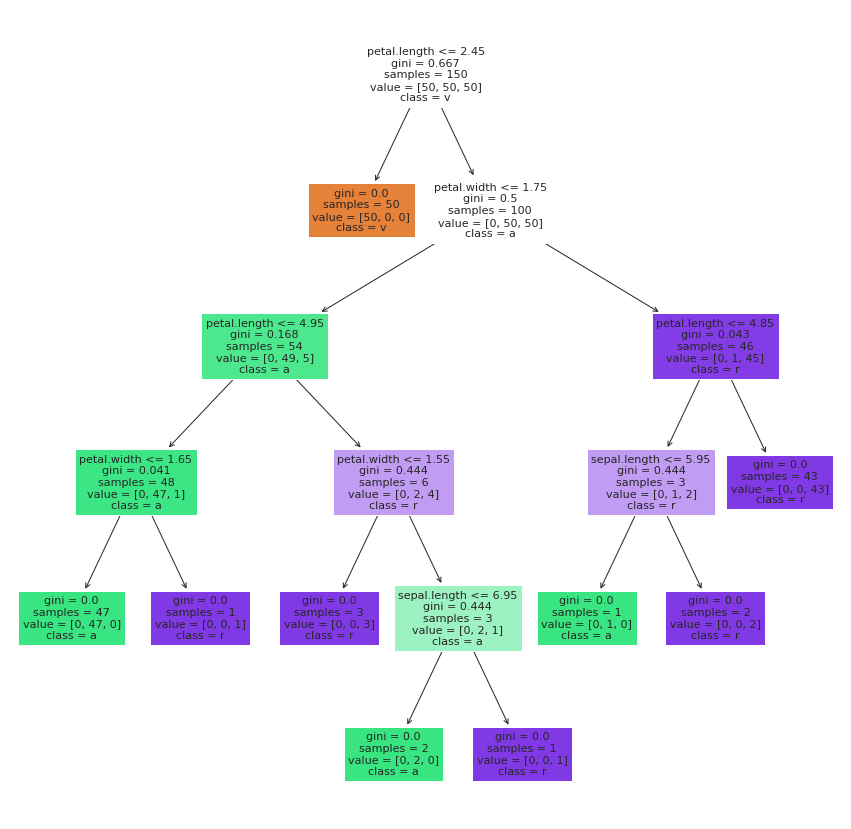
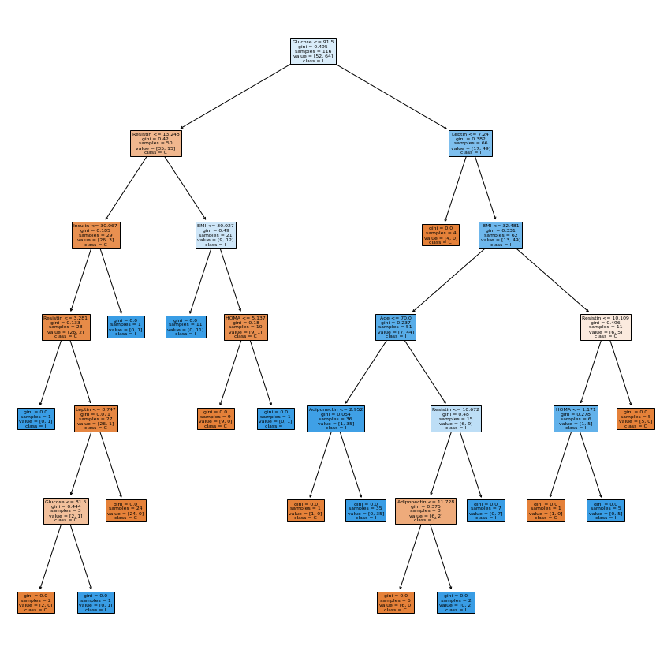
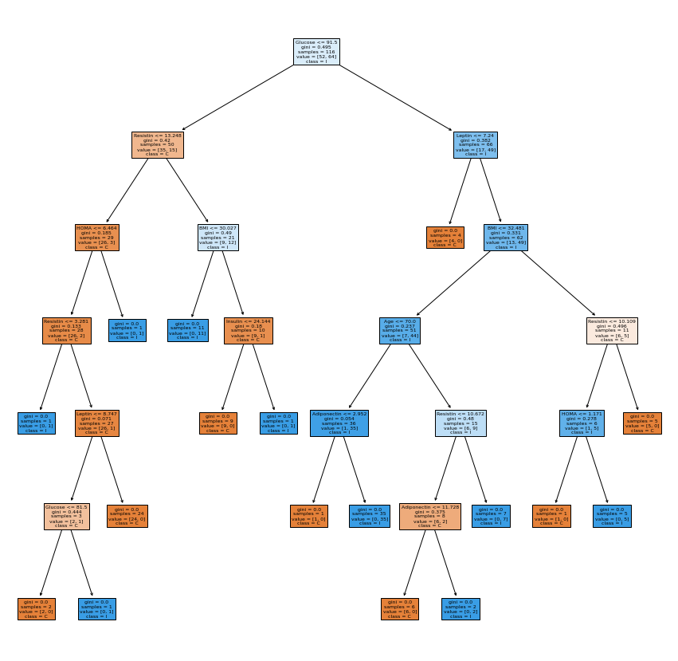

Tugas 1 (Disimilarity)
Contents
Tugas 1 (Disimilarity)#
# import library
import numpy as np
import pandas as pd
import seaborn as sb
%matplotlib inline
import matplotlib.pyplot as plt
import math
#menampilkan data
data = pd.read_csv("https://raw.githubusercontent.com/Ahmad-Dani-Kurniawan/datamining/main/data-jumlah-penduduk-berdasarkan-pendidikan-tahun-2013.csv")
print(data)
tahun nama_provinsi nama_kabupaten_kota nama_kecamatan \
0 2013 PROVINSI DKI JAKARTA KAB.ADM.KEP.SERIBU KEP. SERIBU UTR
1 2013 PROVINSI DKI JAKARTA KAB.ADM.KEP.SERIBU KEP. SERIBU UTR
2 2013 PROVINSI DKI JAKARTA KAB.ADM.KEP.SERIBU KEP. SERIBU UTR
3 2013 PROVINSI DKI JAKARTA KAB.ADM.KEP.SERIBU KEP. SERIBU SLT
4 2013 PROVINSI DKI JAKARTA KAB.ADM.KEP.SERIBU KEP. SERIBU SLT
... ... ... ... ...
2665 2013 PROVINSI DKI JAKARTA JAKARTA TIMUR CIPAYUNG
2666 2013 PROVINSI DKI JAKARTA JAKARTA TIMUR CIPAYUNG
2667 2013 PROVINSI DKI JAKARTA JAKARTA TIMUR CIPAYUNG
2668 2013 PROVINSI DKI JAKARTA JAKARTA TIMUR CIPAYUNG
2669 2013 PROVINSI DKI JAKARTA JAKARTA TIMUR CIPAYUNG
nama_kelurahan pendidikan jumlah
0 P. PANGGANG Tidak/Belum Sekolah 1201.0
1 P. KELAPA Tidak/Belum Sekolah 1189.0
2 P. HARAPAN Tidak/Belum Sekolah 419.0
3 P. UNTUNG JAWA Tidak/Belum Sekolah 434.0
4 P. TIDUNG Tidak/Belum Sekolah 892.0
... ... ... ...
2665 MUNJUL Strata III 9.0
2666 SETU Strata III 16.0
2667 BAMBU APUS Strata III 15.0
2668 LUBANG BUAYA Strata III 19.0
2669 CEGER Strata III 9.0
[2670 rows x 7 columns]
#menampilkan 5 baris data pertama
data.head()
| tahun | nama_provinsi | nama_kabupaten_kota | nama_kecamatan | nama_kelurahan | pendidikan | jumlah | |
|---|---|---|---|---|---|---|---|
| 0 | 2013 | PROVINSI DKI JAKARTA | KAB.ADM.KEP.SERIBU | KEP. SERIBU UTR | P. PANGGANG | Tidak/Belum Sekolah | 1201.0 |
| 1 | 2013 | PROVINSI DKI JAKARTA | KAB.ADM.KEP.SERIBU | KEP. SERIBU UTR | P. KELAPA | Tidak/Belum Sekolah | 1189.0 |
| 2 | 2013 | PROVINSI DKI JAKARTA | KAB.ADM.KEP.SERIBU | KEP. SERIBU UTR | P. HARAPAN | Tidak/Belum Sekolah | 419.0 |
| 3 | 2013 | PROVINSI DKI JAKARTA | KAB.ADM.KEP.SERIBU | KEP. SERIBU SLT | P. UNTUNG JAWA | Tidak/Belum Sekolah | 434.0 |
| 4 | 2013 | PROVINSI DKI JAKARTA | KAB.ADM.KEP.SERIBU | KEP. SERIBU SLT | P. TIDUNG | Tidak/Belum Sekolah | 892.0 |
# 1.
def dt1(i,j):
P = 6
Q = 0
for col in ["tahun", "nama_provinsi", "nama_kabupaten_kota", "nama_kecamatan", "nama_kelurahan", "pendidikan"]:
if data[col][i] == data[col][j]:
Q += 1
return (P-Q)/P
print(dt1(1,2))
print(dt1(1,3))
print(dt1(1,4))
0.16666666666666666
0.3333333333333333
0.3333333333333333
# Numerik
def dt2(i,j,h):
result = 0
for col in ["jumlah"]:
result = math.pow(abs(data[col][i] - data[col][j]), h)
return result**(1/h)
# Manhattan distance
print(dt2(1,2,1))
print(dt2(1,3,1))
print(dt2(1,4,1))
770.0
755.0
297.0
# Euclidean distance
print(dt2(1,2,2))
print(dt2(1,3,2))
print(dt2(1,4,2))
770.0
755.0
297.0
There is a lot more that you can do with outputs (such as including interactive outputs) with your book. For more information about this, see the Jupyter Book documentation
TUGAS 2 : Diskritisasi
# Import Library yang diperlukan
import numpy as np
import pandas as pd
from sklearn import datasets
# Membaca dan Menampilkan data csv
iris = pd.read_csv('https://raw.githubusercontent.com/Ahmad-Dani-Kurniawan/datamining/main/iris.csv')
iris.head()
| sepal.length | sepal.width | petal.length | petal.width | variety | |
|---|---|---|---|---|---|
| 0 | 5.1 | 3.5 | 1.4 | 0.2 | Setosa |
| 1 | 4.9 | 3.0 | 1.4 | 0.2 | Setosa |
| 2 | 4.7 | 3.2 | 1.3 | 0.2 | Setosa |
| 3 | 4.6 | 3.1 | 1.5 | 0.2 | Setosa |
| 4 | 5.0 | 3.6 | 1.4 | 0.2 | Setosa |
# mengetahui jumlah baris dan kolom
iris.shape
(150, 5)
# proses diskritisasi sepal.length
from sklearn.preprocessing import KBinsDiscretizer
a = KBinsDiscretizer(n_bins=4, encode='ordinal', strategy='uniform')
iris["sepal.length"] = a.fit_transform(iris[["sepal.length"]])
# menampilkan hasil diskritisasi
iris["sepal.length"]
0 0.0
1 0.0
2 0.0
3 0.0
4 0.0
...
145 2.0
146 2.0
147 2.0
148 2.0
149 1.0
Name: sepal.length, Length: 150, dtype: float64
# proses diskritisasi sepal.width
from sklearn.preprocessing import KBinsDiscretizer
a = KBinsDiscretizer(n_bins=4, encode='ordinal', strategy='uniform')
iris["sepal.width"] = a.fit_transform(iris[["sepal.width"]])
# menampilkan hasil diskritisasi
iris["sepal.width"]
0 2.0
1 1.0
2 2.0
3 1.0
4 2.0
...
145 1.0
146 0.0
147 1.0
148 2.0
149 1.0
Name: sepal.width, Length: 150, dtype: float64
# proses diskritisasi petal.length
from sklearn.preprocessing import KBinsDiscretizer
a = KBinsDiscretizer(n_bins=4, encode='ordinal', strategy='uniform')
iris["petal.length"] = a.fit_transform(iris[["petal.length"]])
# menampilkan hasil diskritisasi
iris["petal.length"]
0 0.0
1 0.0
2 0.0
3 0.0
4 0.0
...
145 2.0
146 2.0
147 2.0
148 2.0
149 2.0
Name: petal.length, Length: 150, dtype: float64
# proses diskritisasi petal.width
from sklearn.preprocessing import KBinsDiscretizer
a = KBinsDiscretizer(n_bins=4, encode='ordinal', strategy='uniform')
iris["petal.width"] = a.fit_transform(iris[["petal.width"]])
# menampilkan hasil diskritisasi
iris["petal.width"]
0 0.0
1 0.0
2 0.0
3 0.0
4 0.0
...
145 3.0
146 3.0
147 3.0
148 3.0
149 2.0
Name: petal.width, Length: 150, dtype: float64
from google.colab import drive
drive.mount('/content/drive')
KeyboardInterruptTraceback (most recent call last)
<ipython-input-20-d5df0069828e> in <module>
1 from google.colab import drive
----> 2 drive.mount('/content/drive')
/usr/local/lib/python3.7/dist-packages/google/colab/drive.py in mount(mountpoint, force_remount, timeout_ms, readonly)
104 timeout_ms=timeout_ms,
105 ephemeral=True,
--> 106 readonly=readonly)
107
108
/usr/local/lib/python3.7/dist-packages/google/colab/drive.py in _mount(mountpoint, force_remount, timeout_ms, ephemeral, readonly)
123 if ephemeral:
124 _message.blocking_request(
--> 125 'request_auth', request={'authType': 'dfs_ephemeral'}, timeout_sec=None)
126
127 mountpoint = _os.path.expanduser(mountpoint)
/usr/local/lib/python3.7/dist-packages/google/colab/_message.py in blocking_request(request_type, request, timeout_sec, parent)
169 request_id = send_request(
170 request_type, request, parent=parent, expect_reply=True)
--> 171 return read_reply_from_input(request_id, timeout_sec)
/usr/local/lib/python3.7/dist-packages/google/colab/_message.py in read_reply_from_input(message_id, timeout_sec)
95 reply = _read_next_input_message()
96 if reply == _NOT_READY or not isinstance(reply, dict):
---> 97 time.sleep(0.025)
98 continue
99 if (reply.get('type') == 'colab_reply' and
KeyboardInterrupt:
# mengatur tempat penyimpanan file csv
%cd /content/drive/MyDrive/datamining
/content/drive/MyDrive/datamining
iris.to_csv("equal-width diskritisasi_iris.csv")
iris1 = pd.read_csv("/content/drive/MyDrive/datamining/equal-width diskritisasi_iris.csv")
iris1.head()
| Unnamed: 0 | sepal.length | sepal.width | petal.length | petal.width | variety | |
|---|---|---|---|---|---|---|
| 0 | 0 | 0.0 | 2.0 | 0.0 | 0.0 | Setosa |
| 1 | 1 | 0.0 | 1.0 | 0.0 | 0.0 | Setosa |
| 2 | 2 | 0.0 | 2.0 | 0.0 | 0.0 | Setosa |
| 3 | 3 | 0.0 | 1.0 | 0.0 | 0.0 | Setosa |
| 4 | 4 | 0.0 | 2.0 | 0.0 | 0.0 | Setosa |
Tugas 3 (Implementasikan klasifikasi menggunakan KNN pada data iris)#
import numpy as np
import pandas as pd
dataset = pd.read_csv('https://raw.githubusercontent.com/Ahmad-Dani-Kurniawan/datamining/main/iris.csv')
pd.DataFrame(dataset)
| sepal.length | sepal.width | petal.length | petal.width | variety | |
|---|---|---|---|---|---|
| 0 | 5.1 | 3.5 | 1.4 | 0.2 | Setosa |
| 1 | 4.9 | 3.0 | 1.4 | 0.2 | Setosa |
| 2 | 4.7 | 3.2 | 1.3 | 0.2 | Setosa |
| 3 | 4.6 | 3.1 | 1.5 | 0.2 | Setosa |
| 4 | 5.0 | 3.6 | 1.4 | 0.2 | Setosa |
| ... | ... | ... | ... | ... | ... |
| 145 | 6.7 | 3.0 | 5.2 | 2.3 | Virginica |
| 146 | 6.3 | 2.5 | 5.0 | 1.9 | Virginica |
| 147 | 6.5 | 3.0 | 5.2 | 2.0 | Virginica |
| 148 | 6.2 | 3.4 | 5.4 | 2.3 | Virginica |
| 149 | 5.9 | 3.0 | 5.1 | 1.8 | Virginica |
150 rows × 5 columns
#menampilkan informasi dataset
dataset.info()
<class 'pandas.core.frame.DataFrame'>
RangeIndex: 150 entries, 0 to 149
Data columns (total 5 columns):
# Column Non-Null Count Dtype
--- ------ -------------- -----
0 sepal.length 150 non-null float64
1 sepal.width 150 non-null float64
2 petal.length 150 non-null float64
3 petal.width 150 non-null float64
4 variety 150 non-null object
dtypes: float64(4), object(1)
memory usage: 6.0+ KB
#menentukan variabel independen
X = dataset.iloc [:, :-1]
X
| sepal.length | sepal.width | petal.length | petal.width | |
|---|---|---|---|---|
| 0 | 5.1 | 3.5 | 1.4 | 0.2 |
| 1 | 4.9 | 3.0 | 1.4 | 0.2 |
| 2 | 4.7 | 3.2 | 1.3 | 0.2 |
| 3 | 4.6 | 3.1 | 1.5 | 0.2 |
| 4 | 5.0 | 3.6 | 1.4 | 0.2 |
| ... | ... | ... | ... | ... |
| 145 | 6.7 | 3.0 | 5.2 | 2.3 |
| 146 | 6.3 | 2.5 | 5.0 | 1.9 |
| 147 | 6.5 | 3.0 | 5.2 | 2.0 |
| 148 | 6.2 | 3.4 | 5.4 | 2.3 |
| 149 | 5.9 | 3.0 | 5.1 | 1.8 |
150 rows × 4 columns
#menampilkan data variable dependen
Y = dataset.iloc [:, 4]
Y
0 Setosa
1 Setosa
2 Setosa
3 Setosa
4 Setosa
...
145 Virginica
146 Virginica
147 Virginica
148 Virginica
149 Virginica
Name: variety, Length: 150, dtype: object
from sklearn.preprocessing import LabelEncoder
label_encoder = LabelEncoder()
dataset['variety']= label_encoder.fit_transform(dataset['variety'])
dataset['variety'].unique()
label_encoder_y = LabelEncoder()
Y= label_encoder_y.fit_transform(Y)
Y
array([0, 0, 0, 0, 0, 0, 0, 0, 0, 0, 0, 0, 0, 0, 0, 0, 0, 0, 0, 0, 0, 0,
0, 0, 0, 0, 0, 0, 0, 0, 0, 0, 0, 0, 0, 0, 0, 0, 0, 0, 0, 0, 0, 0,
0, 0, 0, 0, 0, 0, 1, 1, 1, 1, 1, 1, 1, 1, 1, 1, 1, 1, 1, 1, 1, 1,
1, 1, 1, 1, 1, 1, 1, 1, 1, 1, 1, 1, 1, 1, 1, 1, 1, 1, 1, 1, 1, 1,
1, 1, 1, 1, 1, 1, 1, 1, 1, 1, 1, 1, 2, 2, 2, 2, 2, 2, 2, 2, 2, 2,
2, 2, 2, 2, 2, 2, 2, 2, 2, 2, 2, 2, 2, 2, 2, 2, 2, 2, 2, 2, 2, 2,
2, 2, 2, 2, 2, 2, 2, 2, 2, 2, 2, 2, 2, 2, 2, 2, 2, 2])
# untuk melakukan klasifikasi knn
from sklearn.model_selection import train_test_split
# membagi daya 0,3
X_train, X_test, Y_train, Y_test = train_test_split(X, Y, test_size=0.3, random_state=42)
# import package untuk mengubah skala data
from sklearn.preprocessing import StandardScaler
scale_X = StandardScaler()
X_train = scale_X.fit_transform(X_train)
X_test = scale_X.transform(X_test)
#untuk klasifikasi knn
from sklearn.neighbors import KNeighborsClassifier
classifier = KNeighborsClassifier(n_neighbors=5)
#input data train pada fungsi klasifikasi
classifier.fit(X_train,Y_train)
KNeighborsClassifier()
# menentukan hasil prediksi dari X_test
y_pred=classifier.predict(X_test)
y_pred
array([1, 0, 2, 1, 1, 0, 1, 2, 1, 1, 2, 0, 0, 0, 0, 1, 2, 1, 1, 2, 0, 2,
0, 2, 2, 2, 2, 2, 0, 0, 0, 0, 1, 0, 0, 2, 1, 0, 0, 0, 2, 1, 1, 0,
0])
# menentukan probabilitas dari hasil prediksi
classifier.predict_proba(X_test)
array([[0. , 0.8, 0.2],
[1. , 0. , 0. ],
[0. , 0. , 1. ],
[0. , 1. , 0. ],
[0. , 0.8, 0.2],
[1. , 0. , 0. ],
[0. , 1. , 0. ],
[0. , 0. , 1. ],
[0. , 0.8, 0.2],
[0. , 1. , 0. ],
[0. , 0. , 1. ],
[1. , 0. , 0. ],
[1. , 0. , 0. ],
[1. , 0. , 0. ],
[1. , 0. , 0. ],
[0. , 0.6, 0.4],
[0. , 0. , 1. ],
[0. , 1. , 0. ],
[0. , 1. , 0. ],
[0. , 0. , 1. ],
[1. , 0. , 0. ],
[0. , 0.2, 0.8],
[1. , 0. , 0. ],
[0. , 0. , 1. ],
[0. , 0. , 1. ],
[0. , 0. , 1. ],
[0. , 0.2, 0.8],
[0. , 0. , 1. ],
[1. , 0. , 0. ],
[1. , 0. , 0. ],
[1. , 0. , 0. ],
[1. , 0. , 0. ],
[0. , 1. , 0. ],
[1. , 0. , 0. ],
[1. , 0. , 0. ],
[0. , 0.4, 0.6],
[0. , 1. , 0. ],
[1. , 0. , 0. ],
[1. , 0. , 0. ],
[1. , 0. , 0. ],
[0. , 0.2, 0.8],
[0. , 0.6, 0.4],
[0. , 1. , 0. ],
[1. , 0. , 0. ],
[1. , 0. , 0. ]])
# import package confussion matrix
from sklearn.metrics import classification_report,confusion_matrix
# hasil dari confussion matrix
print(confusion_matrix(Y_test,y_pred))
[[19 0 0]
[ 0 13 0]
[ 0 0 13]]
# hasil ketepatan nilai precision
print(classification_report(Y_test, y_pred))
precision recall f1-score support
0 1.00 1.00 1.00 19
1 1.00 1.00 1.00 13
2 1.00 1.00 1.00 13
accuracy 1.00 45
macro avg 1.00 1.00 1.00 45
weighted avg 1.00 1.00 1.00 45
# menampilkan hasil accuracy
from sklearn.metrics import accuracy_score
accuracy= accuracy_score(Y_test, y_pred)*100
print(str(round(accuracy, 2))+' %')
100.0 %
# import cross validation
%matplotlib inline
import matplotlib.pyplot as plt
import seaborn as sns
from sklearn.model_selection import cross_val_score
#membuat list of K for KNN
k_list = list(range(1,50,2))
cv_scores = []
# melakukan 10-fold cross validation
for k in k_list:
knn = KNeighborsClassifier(n_neighbors=k)
scores = cross_val_score(knn, X_train, Y_train, cv=10, scoring='accuracy')
cv_scores.append(scores.mean())
# changing to misclassification error
MSE = [1 - x for x in cv_scores]
plt.figure()
plt.figure(figsize=(15,10))
plt.title('The optimal number of neighbors', fontsize=20, fontweight='bold')
plt.xlabel('Number of Neighbors K', fontsize=15)
plt.ylabel('Misclassification Error', fontsize=15)
sns.set_style("whitegrid")
plt.plot(k_list, MSE)
plt.show()
<Figure size 432x288 with 0 Axes>
Tugas 4 (Naive Bayes Gaussian)#
# Importing the libraries
import pandas as pd
import numpy as np
import seaborn as sns
import matplotlib.pyplot as plt
import matplotlib.image as mpimg
#Metrics
from sklearn.metrics import make_scorer, accuracy_score,precision_score
from sklearn.metrics import classification_report
from sklearn.metrics import confusion_matrix
from sklearn.metrics import accuracy_score ,precision_score,recall_score,f1_score
#Model Select
from sklearn.model_selection import KFold,train_test_split,cross_val_score
from sklearn.model_selection import train_test_split
from sklearn.naive_bayes import GaussianNB
# Importing the dataset
dataset = pd.read_csv('https://raw.githubusercontent.com/Ahmad-Dani-Kurniawan/datamining/main/iris.csv')
dataset.head()
| sepal.length | sepal.width | petal.length | petal.width | variety | |
|---|---|---|---|---|---|
| 0 | 5.1 | 3.5 | 1.4 | 0.2 | Setosa |
| 1 | 4.9 | 3.0 | 1.4 | 0.2 | Setosa |
| 2 | 4.7 | 3.2 | 1.3 | 0.2 | Setosa |
| 3 | 4.6 | 3.1 | 1.5 | 0.2 | Setosa |
| 4 | 5.0 | 3.6 | 1.4 | 0.2 | Setosa |
#Spliting the dataset in independent and dependent variables
X = dataset.iloc[:,:4].values
y = dataset['variety'].values
# Splitting the dataset into the Training set and Test set
from sklearn.model_selection import train_test_split
X_train, X_test, y_train, y_test = train_test_split(X, y, test_size = 0.20, random_state = 82)
from sklearn.preprocessing import LabelEncoder
le = LabelEncoder()
y = le.fit_transform(y)
y
array([0, 0, 0, 0, 0, 0, 0, 0, 0, 0, 0, 0, 0, 0, 0, 0, 0, 0, 0, 0, 0, 0,
0, 0, 0, 0, 0, 0, 0, 0, 0, 0, 0, 0, 0, 0, 0, 0, 0, 0, 0, 0, 0, 0,
0, 0, 0, 0, 0, 0, 1, 1, 1, 1, 1, 1, 1, 1, 1, 1, 1, 1, 1, 1, 1, 1,
1, 1, 1, 1, 1, 1, 1, 1, 1, 1, 1, 1, 1, 1, 1, 1, 1, 1, 1, 1, 1, 1,
1, 1, 1, 1, 1, 1, 1, 1, 1, 1, 1, 1, 2, 2, 2, 2, 2, 2, 2, 2, 2, 2,
2, 2, 2, 2, 2, 2, 2, 2, 2, 2, 2, 2, 2, 2, 2, 2, 2, 2, 2, 2, 2, 2,
2, 2, 2, 2, 2, 2, 2, 2, 2, 2, 2, 2, 2, 2, 2, 2, 2, 2])
# 0,3 sebagai data uji sebanyak 30%
#Train and Test split
X_train,X_test,y_train,y_test=train_test_split(X,y,test_size=0.3,random_state=0)
X_test.shape
(45, 4)
gaussian = GaussianNB()
gaussian.fit(X_train, y_train)
Y_pred = gaussian.predict(X_test)
accuracy_nb=round(accuracy_score(y_test,Y_pred)* 100, 2)
acc_gaussian = round(gaussian.score(X_train, y_train) * 100, 2)
cm = confusion_matrix(y_test, Y_pred)
accuracy = accuracy_score(y_test,Y_pred)
precision =precision_score(y_test, Y_pred,average='micro')
recall = recall_score(y_test, Y_pred,average='micro')
f1 = f1_score(y_test,Y_pred,average='micro')
print('Confusion matrix for Naive Bayes\n',cm)
print('accuracy_Naive Bayes: %.3f' %accuracy)
print('precision_Naive Bayes: %.3f' %precision)
print('recall_Naive Bayes: %.3f' %recall)
print('f1-score_Naive Bayes : %.3f' %f1)
Confusion matrix for Naive Bayes
[[16 0 0]
[ 0 18 0]
[ 0 0 11]]
accuracy_Naive Bayes: 1.000
precision_Naive Bayes: 1.000
recall_Naive Bayes: 1.000
f1-score_Naive Bayes : 1.000
Tugas 5 (Clestering K-Mean)#
import pandas as pd
import numpy as np
import matplotlib.pyplot as plt
import seaborn as sns
from sklearn.cluster import KMeans
from sklearn.metrics import silhouette_score
from sklearn.preprocessing import MinMaxScaler
dataset = pd.read_csv('https://raw.githubusercontent.com/Ahmad-Dani-Kurniawan/datamining/main/iris.csv')
x = dataset.iloc[:, [0, 1, 2, 3]].values
dataset.info()
dataset[0:10]
<class 'pandas.core.frame.DataFrame'>
RangeIndex: 150 entries, 0 to 149
Data columns (total 5 columns):
# Column Non-Null Count Dtype
--- ------ -------------- -----
0 sepal.length 150 non-null float64
1 sepal.width 150 non-null float64
2 petal.length 150 non-null float64
3 petal.width 150 non-null float64
4 variety 150 non-null object
dtypes: float64(4), object(1)
memory usage: 6.0+ KB
| sepal.length | sepal.width | petal.length | petal.width | variety | |
|---|---|---|---|---|---|
| 0 | 5.1 | 3.5 | 1.4 | 0.2 | Setosa |
| 1 | 4.9 | 3.0 | 1.4 | 0.2 | Setosa |
| 2 | 4.7 | 3.2 | 1.3 | 0.2 | Setosa |
| 3 | 4.6 | 3.1 | 1.5 | 0.2 | Setosa |
| 4 | 5.0 | 3.6 | 1.4 | 0.2 | Setosa |
| 5 | 5.4 | 3.9 | 1.7 | 0.4 | Setosa |
| 6 | 4.6 | 3.4 | 1.4 | 0.3 | Setosa |
| 7 | 5.0 | 3.4 | 1.5 | 0.2 | Setosa |
| 8 | 4.4 | 2.9 | 1.4 | 0.2 | Setosa |
| 9 | 4.9 | 3.1 | 1.5 | 0.1 | Setosa |
#Frequency distribution of species"
iris_outcome = pd.crosstab(index=dataset["variety"],columns="count") # Name the count column
iris_outcome
| col_0 | count |
|---|---|
| variety | |
| Setosa | 50 |
| Versicolor | 50 |
| Virginica | 50 |
iris_setosa=dataset.loc[dataset["variety"]=="Iris-setosa"]
iris_virginica=dataset.loc[dataset["variety"]=="Iris-virginica"]
iris_versicolor=dataset.loc[dataset["variety"]=="Iris-versicolor"]
sns.FacetGrid(dataset,hue="variety",size=3).map(sns.distplot,"sepal.length").add_legend()
sns.FacetGrid(dataset,hue="variety",size=3).map(sns.distplot,"sepal.width").add_legend()
sns.FacetGrid(dataset,hue="variety",size=3).map(sns.distplot,"petal.length").add_legend()
sns.FacetGrid(dataset,hue="variety",size=3).map(sns.distplot,"petal.width").add_legend()
plt.show()
/usr/local/lib/python3.7/dist-packages/seaborn/axisgrid.py:337: UserWarning: The `size` parameter has been renamed to `height`; please update your code.
warnings.warn(msg, UserWarning)
/usr/local/lib/python3.7/dist-packages/seaborn/distributions.py:2619: FutureWarning: `distplot` is a deprecated function and will be removed in a future version. Please adapt your code to use either `displot` (a figure-level function with similar flexibility) or `histplot` (an axes-level function for histograms).
warnings.warn(msg, FutureWarning)
/usr/local/lib/python3.7/dist-packages/seaborn/distributions.py:2619: FutureWarning: `distplot` is a deprecated function and will be removed in a future version. Please adapt your code to use either `displot` (a figure-level function with similar flexibility) or `histplot` (an axes-level function for histograms).
warnings.warn(msg, FutureWarning)
/usr/local/lib/python3.7/dist-packages/seaborn/distributions.py:2619: FutureWarning: `distplot` is a deprecated function and will be removed in a future version. Please adapt your code to use either `displot` (a figure-level function with similar flexibility) or `histplot` (an axes-level function for histograms).
warnings.warn(msg, FutureWarning)
/usr/local/lib/python3.7/dist-packages/seaborn/axisgrid.py:337: UserWarning: The `size` parameter has been renamed to `height`; please update your code.
warnings.warn(msg, UserWarning)
/usr/local/lib/python3.7/dist-packages/seaborn/distributions.py:2619: FutureWarning: `distplot` is a deprecated function and will be removed in a future version. Please adapt your code to use either `displot` (a figure-level function with similar flexibility) or `histplot` (an axes-level function for histograms).
warnings.warn(msg, FutureWarning)
/usr/local/lib/python3.7/dist-packages/seaborn/distributions.py:2619: FutureWarning: `distplot` is a deprecated function and will be removed in a future version. Please adapt your code to use either `displot` (a figure-level function with similar flexibility) or `histplot` (an axes-level function for histograms).
warnings.warn(msg, FutureWarning)
/usr/local/lib/python3.7/dist-packages/seaborn/distributions.py:2619: FutureWarning: `distplot` is a deprecated function and will be removed in a future version. Please adapt your code to use either `displot` (a figure-level function with similar flexibility) or `histplot` (an axes-level function for histograms).
warnings.warn(msg, FutureWarning)
/usr/local/lib/python3.7/dist-packages/seaborn/axisgrid.py:337: UserWarning: The `size` parameter has been renamed to `height`; please update your code.
warnings.warn(msg, UserWarning)
/usr/local/lib/python3.7/dist-packages/seaborn/distributions.py:2619: FutureWarning: `distplot` is a deprecated function and will be removed in a future version. Please adapt your code to use either `displot` (a figure-level function with similar flexibility) or `histplot` (an axes-level function for histograms).
warnings.warn(msg, FutureWarning)
/usr/local/lib/python3.7/dist-packages/seaborn/distributions.py:2619: FutureWarning: `distplot` is a deprecated function and will be removed in a future version. Please adapt your code to use either `displot` (a figure-level function with similar flexibility) or `histplot` (an axes-level function for histograms).
warnings.warn(msg, FutureWarning)
/usr/local/lib/python3.7/dist-packages/seaborn/distributions.py:2619: FutureWarning: `distplot` is a deprecated function and will be removed in a future version. Please adapt your code to use either `displot` (a figure-level function with similar flexibility) or `histplot` (an axes-level function for histograms).
warnings.warn(msg, FutureWarning)
/usr/local/lib/python3.7/dist-packages/seaborn/axisgrid.py:337: UserWarning: The `size` parameter has been renamed to `height`; please update your code.
warnings.warn(msg, UserWarning)
/usr/local/lib/python3.7/dist-packages/seaborn/distributions.py:2619: FutureWarning: `distplot` is a deprecated function and will be removed in a future version. Please adapt your code to use either `displot` (a figure-level function with similar flexibility) or `histplot` (an axes-level function for histograms).
warnings.warn(msg, FutureWarning)
/usr/local/lib/python3.7/dist-packages/seaborn/distributions.py:2619: FutureWarning: `distplot` is a deprecated function and will be removed in a future version. Please adapt your code to use either `displot` (a figure-level function with similar flexibility) or `histplot` (an axes-level function for histograms).
warnings.warn(msg, FutureWarning)
/usr/local/lib/python3.7/dist-packages/seaborn/distributions.py:2619: FutureWarning: `distplot` is a deprecated function and will be removed in a future version. Please adapt your code to use either `displot` (a figure-level function with similar flexibility) or `histplot` (an axes-level function for histograms).
warnings.warn(msg, FutureWarning)
tugas 6 (Decision Tree)#
#Importing multiple library to read,analysed and visualized the dataset
import pandas as pd
import numpy as np
from sklearn.metrics import accuracy_score
from sklearn import tree
from matplotlib import pyplot as plt
dataset = pd.read_csv('https://raw.githubusercontent.com/Ahmad-Dani-Kurniawan/datamining/main/iris.csv')
#Checking top 10 records of Dataset..
dataset.head(10)
| sepal.length | sepal.width | petal.length | petal.width | variety | |
|---|---|---|---|---|---|
| 0 | 5.1 | 3.5 | 1.4 | 0.2 | Setosa |
| 1 | 4.9 | 3.0 | 1.4 | 0.2 | Setosa |
| 2 | 4.7 | 3.2 | 1.3 | 0.2 | Setosa |
| 3 | 4.6 | 3.1 | 1.5 | 0.2 | Setosa |
| 4 | 5.0 | 3.6 | 1.4 | 0.2 | Setosa |
| 5 | 5.4 | 3.9 | 1.7 | 0.4 | Setosa |
| 6 | 4.6 | 3.4 | 1.4 | 0.3 | Setosa |
| 7 | 5.0 | 3.4 | 1.5 | 0.2 | Setosa |
| 8 | 4.4 | 2.9 | 1.4 | 0.2 | Setosa |
| 9 | 4.9 | 3.1 | 1.5 | 0.1 | Setosa |
#Basic Information regarding data
dataset.info()
<class 'pandas.core.frame.DataFrame'>
RangeIndex: 150 entries, 0 to 149
Data columns (total 5 columns):
# Column Non-Null Count Dtype
--- ------ -------------- -----
0 sepal.length 150 non-null float64
1 sepal.width 150 non-null float64
2 petal.length 150 non-null float64
3 petal.width 150 non-null float64
4 variety 150 non-null object
dtypes: float64(4), object(1)
memory usage: 6.0+ KB
#Describe function gives the basic numerical info about data for each numeric feature..
dataset.describe()
| sepal.length | sepal.width | petal.length | petal.width | |
|---|---|---|---|---|
| count | 150.000000 | 150.000000 | 150.000000 | 150.000000 |
| mean | 5.843333 | 3.057333 | 3.758000 | 1.199333 |
| std | 0.828066 | 0.435866 | 1.765298 | 0.762238 |
| min | 4.300000 | 2.000000 | 1.000000 | 0.100000 |
| 25% | 5.100000 | 2.800000 | 1.600000 | 0.300000 |
| 50% | 5.800000 | 3.000000 | 4.350000 | 1.300000 |
| 75% | 6.400000 | 3.300000 | 5.100000 | 1.800000 |
| max | 7.900000 | 4.400000 | 6.900000 | 2.500000 |
#Data points count value for each class labels..
dataset.variety.value_counts()
Setosa 50
Versicolor 50
Virginica 50
Name: variety, dtype: int64
visualisasi Data#
#Visualizing the dataset features to find pattern to solve our task
plt.scatter(dataset['sepal.length'],dataset['sepal.width'])
plt.show()

#Using Seaborn lib to visualized 2 features based on target variable.
sns.set_style('whitegrid')
sns.FacetGrid(dataset, hue = 'variety') \
.map(plt.scatter, 'sepal.length','sepal.width') \
.add_legend()
plt.show()

X = [[0, 0], [1, 1]]
Y = [0, 1]
clf = tree.DecisionTreeClassifier()
clf = clf.fit(X, Y)
clf.predict([[2., 2.]])
array([1])
clf.predict_proba([[2., 2.]])
array([[0., 1.]])
y = dataset["variety"]
X = dataset.drop(columns=["variety"])
clf = tree.DecisionTreeClassifier(criterion="gini")
clf = clf.fit(X, y)
tree.plot_tree(clf)
[Text(0.5, 0.9166666666666666, 'X[2] <= 2.45\ngini = 0.667\nsamples = 150\nvalue = [50, 50, 50]'),
Text(0.4230769230769231, 0.75, 'gini = 0.0\nsamples = 50\nvalue = [50, 0, 0]'),
Text(0.5769230769230769, 0.75, 'X[3] <= 1.75\ngini = 0.5\nsamples = 100\nvalue = [0, 50, 50]'),
Text(0.3076923076923077, 0.5833333333333334, 'X[2] <= 4.95\ngini = 0.168\nsamples = 54\nvalue = [0, 49, 5]'),
Text(0.15384615384615385, 0.4166666666666667, 'X[3] <= 1.65\ngini = 0.041\nsamples = 48\nvalue = [0, 47, 1]'),
Text(0.07692307692307693, 0.25, 'gini = 0.0\nsamples = 47\nvalue = [0, 47, 0]'),
Text(0.23076923076923078, 0.25, 'gini = 0.0\nsamples = 1\nvalue = [0, 0, 1]'),
Text(0.46153846153846156, 0.4166666666666667, 'X[3] <= 1.55\ngini = 0.444\nsamples = 6\nvalue = [0, 2, 4]'),
Text(0.38461538461538464, 0.25, 'gini = 0.0\nsamples = 3\nvalue = [0, 0, 3]'),
Text(0.5384615384615384, 0.25, 'X[0] <= 6.95\ngini = 0.444\nsamples = 3\nvalue = [0, 2, 1]'),
Text(0.46153846153846156, 0.08333333333333333, 'gini = 0.0\nsamples = 2\nvalue = [0, 2, 0]'),
Text(0.6153846153846154, 0.08333333333333333, 'gini = 0.0\nsamples = 1\nvalue = [0, 0, 1]'),
Text(0.8461538461538461, 0.5833333333333334, 'X[2] <= 4.85\ngini = 0.043\nsamples = 46\nvalue = [0, 1, 45]'),
Text(0.7692307692307693, 0.4166666666666667, 'X[0] <= 5.95\ngini = 0.444\nsamples = 3\nvalue = [0, 1, 2]'),
Text(0.6923076923076923, 0.25, 'gini = 0.0\nsamples = 1\nvalue = [0, 1, 0]'),
Text(0.8461538461538461, 0.25, 'gini = 0.0\nsamples = 2\nvalue = [0, 0, 2]'),
Text(0.9230769230769231, 0.4166666666666667, 'gini = 0.0\nsamples = 43\nvalue = [0, 0, 43]')]
fig = plt.figure(figsize=(15,15))
_ = tree.plot_tree(clf, feature_names=list(dataset.columns.values)[:4], class_names=list(dataset.columns.values)[4] ,filled=True)

UTS (13 Oktober 2022)#
Metode Naive Bayes Classifier#
# mengimport library
import pandas as pd
import numpy as np
import seaborn as sns
#Metrics
from sklearn.metrics import make_scorer, accuracy_score,precision_score
from sklearn.metrics import classification_report
from sklearn.metrics import confusion_matrix
from sklearn.metrics import accuracy_score ,precision_score,recall_score,f1_score
#Model Select
from sklearn.model_selection import KFold,train_test_split,cross_val_score
from sklearn.model_selection import train_test_split
from sklearn.naive_bayes import GaussianNB
# Untuk mengimportkan dataset dari github ke collab
datauts = pd.read_csv('https://raw.githubusercontent.com/Ahmad-Dani-Kurniawan/datamining/main/dataR2.csv')
# Untuk menampilkan 5 data teratas
datauts.head()
| Age | BMI | Glucose | Insulin | HOMA | Leptin | Adiponectin | Resistin | MCP.1 | Classification | |
|---|---|---|---|---|---|---|---|---|---|---|
| 0 | 48 | 23.500000 | 70 | 2.707 | 0.467409 | 8.8071 | 9.702400 | 7.99585 | 417.114 | 1 |
| 1 | 83 | 20.690495 | 92 | 3.115 | 0.706897 | 8.8438 | 5.429285 | 4.06405 | 468.786 | 1 |
| 2 | 82 | 23.124670 | 91 | 4.498 | 1.009651 | 17.9393 | 22.432040 | 9.27715 | 554.697 | 1 |
| 3 | 68 | 21.367521 | 77 | 3.226 | 0.612725 | 9.8827 | 7.169560 | 12.76600 | 928.220 | 1 |
| 4 | 86 | 21.111111 | 92 | 3.549 | 0.805386 | 6.6994 | 4.819240 | 10.57635 | 773.920 | 1 |
# Untuk Menampilkan Informasi data yang telah diimportkan
datauts.info()
<class 'pandas.core.frame.DataFrame'>
RangeIndex: 116 entries, 0 to 115
Data columns (total 10 columns):
# Column Non-Null Count Dtype
--- ------ -------------- -----
0 Age 116 non-null int64
1 BMI 116 non-null float64
2 Glucose 116 non-null int64
3 Insulin 116 non-null float64
4 HOMA 116 non-null float64
5 Leptin 116 non-null float64
6 Adiponectin 116 non-null float64
7 Resistin 116 non-null float64
8 MCP.1 116 non-null float64
9 Classification 116 non-null int64
dtypes: float64(7), int64(3)
memory usage: 9.2 KB
# Untuk mengeluarkan variable classification dari dataset
x = datauts.drop(["Classification"], axis = 1)
x.head
<bound method NDFrame.head of Age BMI Glucose Insulin HOMA Leptin Adiponectin \
0 48 23.500000 70 2.707 0.467409 8.8071 9.702400
1 83 20.690495 92 3.115 0.706897 8.8438 5.429285
2 82 23.124670 91 4.498 1.009651 17.9393 22.432040
3 68 21.367521 77 3.226 0.612725 9.8827 7.169560
4 86 21.111111 92 3.549 0.805386 6.6994 4.819240
.. ... ... ... ... ... ... ...
111 45 26.850000 92 3.330 0.755688 54.6800 12.100000
112 62 26.840000 100 4.530 1.117400 12.4500 21.420000
113 65 32.050000 97 5.730 1.370998 61.4800 22.540000
114 72 25.590000 82 2.820 0.570392 24.9600 33.750000
115 86 27.180000 138 19.910 6.777364 90.2800 14.110000
Resistin MCP.1
0 7.99585 417.114
1 4.06405 468.786
2 9.27715 554.697
3 12.76600 928.220
4 10.57635 773.920
.. ... ...
111 10.96000 268.230
112 7.32000 330.160
113 10.33000 314.050
114 3.27000 392.460
115 4.35000 90.090
[116 rows x 9 columns]>
# untuk menentukan variable dependent
y = datauts["Classification"]
y.head()
0 1
1 1
2 1
3 1
4 1
Name: Classification, dtype: int64
# membuat dataset menjadi 2 bagian
x_train,x_test,y_train,y_test=train_test_split(x,y,test_size=0.2,random_state=123)
# Mengaktifkan fungsi klasifikasi naive bayes
modelnb = GaussianNB()
# Memasukan data training
nbtrain = modelnb.fit(x_train, y_train)
# Menghitung jumlah class pada model nbtrain
nbtrain.class_count_
array([42., 50.])
# menentukan hasil prediksi dari x_test
y_pred = nbtrain.predict(x_test)
y_pred
array([1, 2, 1, 1, 1, 2, 1, 1, 2, 2, 2, 1, 1, 1, 1, 1, 2, 1, 1, 1, 1, 1,
2, 1])
# Menentukan Probabilitas hasil prediksi
nbtrain.predict_proba(x_test)
array([[9.87787689e-01, 1.22123112e-02],
[1.45791388e-12, 1.00000000e+00],
[9.50308197e-01, 4.96918031e-02],
[9.80202244e-01, 1.97977556e-02],
[9.94829132e-01, 5.17086806e-03],
[7.14621951e-03, 9.92853780e-01],
[9.66508542e-01, 3.34914581e-02],
[5.55854792e-01, 4.44145208e-01],
[9.48288324e-69, 1.00000000e+00],
[4.41615386e-08, 9.99999956e-01],
[1.91309626e-17, 1.00000000e+00],
[9.59192121e-01, 4.08078792e-02],
[9.68869529e-01, 3.11304713e-02],
[9.22729312e-01, 7.72706876e-02],
[9.99217834e-01, 7.82165762e-04],
[9.47186594e-01, 5.28134059e-02],
[9.02404143e-18, 1.00000000e+00],
[9.84266029e-01, 1.57339713e-02],
[9.73657705e-01, 2.63422945e-02],
[9.79374673e-01, 2.06253269e-02],
[9.33943178e-01, 6.60568220e-02],
[9.91441278e-01, 8.55872171e-03],
[1.11566782e-02, 9.88843322e-01],
[9.57616296e-01, 4.23837037e-02]])
# Menentukan akurasi dari y_test
confusion_matrix(y_test, y_pred)
array([[8, 2],
[9, 5]])
Metode Decision Tree#
# Mengimport library
import pandas as pd
import numpy as np
from sklearn.metrics import accuracy_score
from sklearn import tree
from sklearn import metrics
from matplotlib import pyplot as plt
# Untuk mengimportkan dataset dari github ke collab
datauts = pd.read_csv('https://raw.githubusercontent.com/Ahmad-Dani-Kurniawan/datamining/main/dataR2.csv')
# Untuk menampilkan 5 data teratas
datauts.head()
| Age | BMI | Glucose | Insulin | HOMA | Leptin | Adiponectin | Resistin | MCP.1 | Classification | |
|---|---|---|---|---|---|---|---|---|---|---|
| 0 | 48 | 23.500000 | 70 | 2.707 | 0.467409 | 8.8071 | 9.702400 | 7.99585 | 417.114 | 1 |
| 1 | 83 | 20.690495 | 92 | 3.115 | 0.706897 | 8.8438 | 5.429285 | 4.06405 | 468.786 | 1 |
| 2 | 82 | 23.124670 | 91 | 4.498 | 1.009651 | 17.9393 | 22.432040 | 9.27715 | 554.697 | 1 |
| 3 | 68 | 21.367521 | 77 | 3.226 | 0.612725 | 9.8827 | 7.169560 | 12.76600 | 928.220 | 1 |
| 4 | 86 | 21.111111 | 92 | 3.549 | 0.805386 | 6.6994 | 4.819240 | 10.57635 | 773.920 | 1 |
# melihat klasifikasi dari data
datauts.Classification.value_counts()
2 64
1 52
Name: Classification, dtype: int64
y = datauts["Classification"]
x = datauts.drop(columns=["Classification"])
clf = tree.DecisionTreeClassifier(criterion="gini")
clf = clf.fit(x, y)
# Menampilkan tree plot dari dataset
fig = plt.figure(figsize=(15,15))
_ = tree.plot_tree(clf, feature_names=list(datauts.columns.values)[:9], class_names=list(datauts.columns.values)[9] ,filled=True)

clf = tree.DecisionTreeClassifier(criterion="gini")
clf = clf.fit(x_train,y_train)
y_pred = clf.predict(x_test)
print("Accuracy",metrics.accuracy_score(y_test,y_pred))
Accuracy 0.5833333333333334
plt.figure(figsize=(15,15))
# untuk membuat tree plot
a = tree.plot_tree(clf,
rounded = True,
filled = True,
fontsize=8)
# Untuk menampilkan the tree plot
plt.show()
